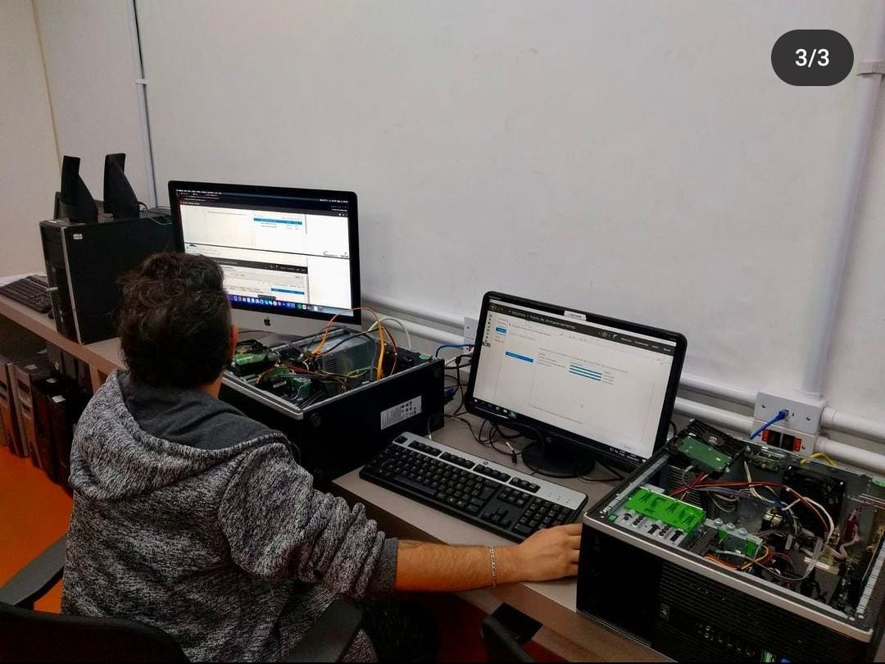

<!-- Utilizado para definir que este documento segue as regras de sintaxe do HTML 5 -->
<!DOCTYPE html>

<!DOCTYPE html>
<html lang="pt-br">

<head>
	<meta charset="UTF-8">
	<meta name="viewport" content="width=device-width, initial-scale=1.0">
	<link rel="stylesheet" type="text/css" href="../css/estilogeral.css" />
	<link rel="stylesheet" type="text/css" href="../css/styletecinfo.css" />
	<link rel="shotcut icon" type="image/x-icon" href="../imagens/senac.ico" />

	<title>Téc.Informática</title>
</head>

</html>
<html lang="pt-br">

<body>
	
	<nav id="menu">
		<ul>
			<li><a href="../index.html">Página Inicial</a></li>
			<li><a href="/paginas/Cursos.html">Cursos</a></li>
			<li><a href="/paginas/informacoes.html">Informações</a></li>
			<li><a href="/paginas/faleconosco.html">Fale Conosco</a></li>
		</ul>
	</nav>
	<p>
	<h1>Um pouco mais sobre nosso Técnico em Informática!</h1>
	<br>
	
	A formação vai te preparar para fazer o planejamento e pela execução dos processos de manutenção de
	computadores
	e pela operação de redes locais de computadores. Além de, desenvolver aplicativos computacionais,
	adotando
	normas técnicas, de qualidade, de saúde, de segurança do trabalho e preservação ambiental no desempenho
	de
	sua
	função.
	<br>
	Acompanhe a distribuição da carga-horária do currículo:
	<br>
	Total de horas do curso: 1.200h
	<br>
	- Momentos presenciais*: 996h
	<br>
	- Momentos mediados por tecnologias com tutoria ativa**: 204h (no formato EAD - Educação a Distância)
	<br>
	Ao final da formação você estará apto a atuar em empresas de diversos segmentos, além de poder
	participar de
	concursos em organizações públicas.
	</p>
	<hr>
	<p>
	<h1> &bull; Diferenciais</h1>

	O Senac-RS é uma das maiores instituições de ensino do país. Nos mais de 70 anos de atuação, já
	capacitou mais
	de 7 milhões de gaúchos. A instituição tem como diferencial o Projeto Integrador, que é uma unidade
	curricular
	de natureza diferenciada, baseada na metodologia de ação-reflexão-ação, que se constitui na proposição
	de
	situações desafiadoras a serem resolvidas pelo aluno. Também, durante a formação, você receberá, ao
	final de
	cada módulo, certificações intermediárias que possibilitam a rápida inserção no mercado de trabalho:
	Qualificação Profissional em Assistente de Suporte e Manutenção de Computadores, Qualificação
	Profissional
	Assistente de Operação de Redes de Computadores e Qualificação Profissional Assistente de
	Desenvolvimento de
	Aplicativos Computacionais. O curso Técnico em Informática tem como diferencial os docentes com formação
	superior na área e experiência profissional. As aulas são ministradas com foco nas habilidades práticas
	e
	desenvolvimento profissional, e de <b>modalidade Presencial</b>
	</p>
	<br>
	<hr>
	<p> 
	<h1>&bull; Mercado De Trabalho</h1>

	A área da Informática está inserida em todos os segmentos de negócios. Com este curso técnico, você
	poderá atuar
	em empresas de diversos portes, efetuar estágio e concorrer a um cargo público por meio de um concurso,
	Também a
	escola senac tech tem um grupo no facebook de compartilhamento de vagas e informações sobre eventos e
	parcerias!
	</p>
	<hr>
	<p>
	<h1>&bull; Metodologia</h1>
	Aprendizagem que oportuniza a autonomia do estudante no desenvolvimento de competências, as quais são
	entendidas
	como ação profissional observável, articulando conhecimentos, habilidades, atitudes e que, ainda,
	permite o
	desenvolvimento contínuo em atividades do mercado de trabalho.
	<hr>

	<h1>&bull; Pré-requisitos</h1>
	Idade mínima: 15 anos no primeiro dia de aula (ou seja, no início do curso).
	<br>
	Escolaridade: Ensino Médio cursando ou completo.
	<hr>
	</p>
</body>

</html>